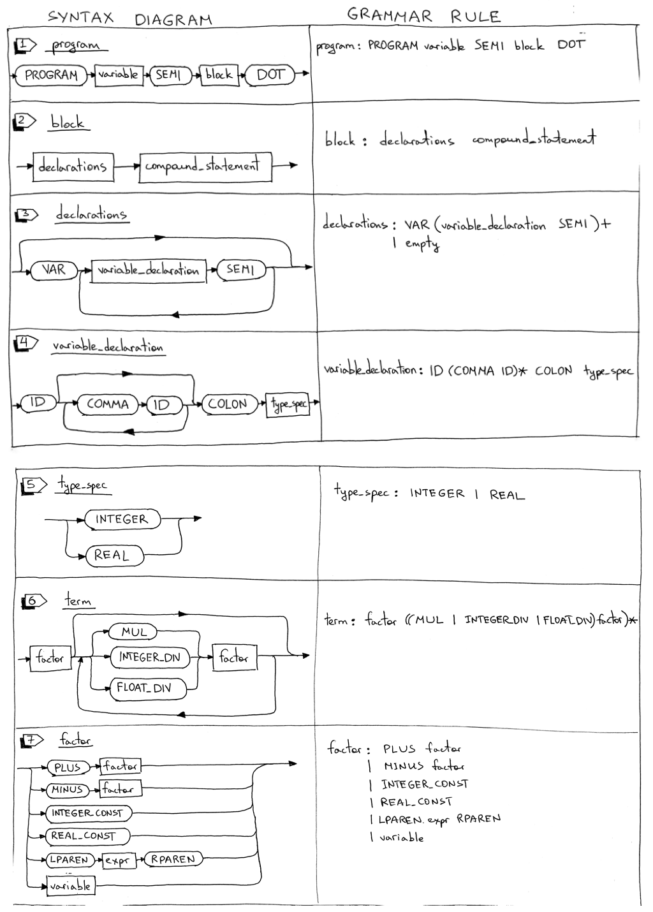

In this article we will update our interpreter to parse and interpret our very first complete Pascal program. The program can also be compiled by the Free Pascal compiler, fpc.
What we’re going to cover in this article:
- How to parse and interpret the Pascal PROGRAM header
- How to parse Pascal variable declarations
- Update the interpreter to use the DIV keyword for integer division and a forward slash / for float division
- Support for Pascal comments
Dive in and look at the grammar changes first. We’ll add some new rules and update some of the existing rules.

The program definition grammar rule is updated to include the PROGRAM reserved keyword, the program name, and a block that ends with a dot. Here is an example of a complete Pascal program:
PROGRAM Part10; BEGIN END.The block rule combines a declarations rule and a _compound_statement_ rule. We’ll also use the rule later in the series when we add procedure declarations. Here is an example of a block:
VAR number : INTEGER; BEGIN END # or BEGIN ENDPascal declarations have several parts and each part is optional. In this article, we’ll cover the variable declaration part only. The declarations rule has either a variable declaration sub-rule or it’s empty.
Pascal is a statically typed language, which means that every variable needs a variable declaration that explicitly specifies its type. In Pascal, variables must be declared before they are used. This is achieved by declaring variables in the program variable declaration section using the VAR reserved keyword. You can define variables like this:
VAR number : INTEGER; a, b, c, x : INTEGER; y : REAL;The _type_spec_ rule is for handling INTEGER and REAL types and is used in variable declarations. In the example below
VAR a : INTEGER; b : REAL;The term rule is updated to use the DIV keyword for integer division and a forward slash / for float division.
Before, dividing 20 by 7 using a forward slash would produce an INTEGER 2:
20 / 7 = 2Now, dividing 20 by 7 using a forward slash will produce a REAL (floating point number) 2.85714285714 :
20 / 7 = 2.85714285714From now on, to get an INTEGER instead of a REAL, you need to use the DIV keyword:
20 DIV 7 = 2The factor rule is updated to handle both integer and real (float) constants. I also removed the INTEGER sub-rule because the constants will be represented by INTEGER_CONST_ and _REAL_CONST tokens and the INTEGER token will be used to represent the integer type. In the example below the lexer will generate an INTEGER_CONST_ token for 20 and 7 and a _REAL_CONST token for 3.14 :
y := 20 / 7 + 3.14;Here is our complete grammar for today:
program : PROGRAM variable SEMI block DOT block : declarations compound_statement declarations : VAR (variable_declaration SEMI)+ | empty variable_declaration : ID (COMMA ID)* COLON type_spec type_spec : INTEGER compound_statement : BEGIN statement_list END statement_list : statement | statement SEMI statement_list statement : compound_statement | assignment_statement | empty assignment_statement : variable ASSIGN expr empty : expr : term ((PLUS | MINUS) term)* term : factor ((MUL | INTEGER_DIV | FLOAT_DIV) factor)* factor : PLUS factor | MINUS factor | INTEGER_CONST | REAL_CONST | LPAREN expr RPAREN | variable variable: ID
In the rest of the article we’ll go through the same drill we went through last time:
- Update the lexer
- Update the parser
- Update the interpreter
Update the lexer
Here is a summary of the lexer changes:
- New tokens
- New and updated reserved keywords
- New _skip_comments_ method to handle Pascal comments
- Rename the integer method and make some changes to the method itself
- Update the get_next_token method to return new tokens
One by one:
To handle a program header, variable declarations, integer and float constants as well as integer and float division, we need to add some new tokens - some of which are reserved keywords - and we also need to update the meaning of the INTEGER token to represent the integer type and not an integer constant. Here is a complete list of new and updated tokens:
- PROGRAM (reserved keyword)
- VAR (reserved keyword)
- COLON (:)
- COMMA (,)
- INTEGER (we change it to mean integer type and not integer constant like 3 or 5)
- REAL (for Pascal REAL type)
- INTEGER_CONST (for example, 3 or 5)
- REAL_CONST (for example, 3.14 and so on)
- INTEGER_DIV for integer division (the DIV reserved keyword)
- FLOAT_DIV for float division ( forward slash / )
Here is the complete mapping of reserved keywords to tokens:
RESERVED_KEYWORDS = { 'PROGRAM': Token(PROGRAM, 'PROGRAM'), 'VAR': Token(VAR, 'VAR'), 'DIV': Token(INTEGER_DIV, 'DIV'), 'INTEGER': Token(INTEGER, 'INTEGER'), 'REAL': Token(REAL, 'REAL'), 'BEGIN': Token(BEGIN, 'BEGIN'), 'END': Token(END, 'END'), }We’re adding the _skip_comment_ method to handle Pascal comments. The method is pretty basic and all it does is discard all the characters until the closing curly brace is found:
def skip_comment(self): while self.current_char != '}': self.advance() self.advance() # the closing curly braceWe are renaming the integer method the number method. It can handle both integer constants and float constants like 3 and 3.14:
def number(self): """Return a (multidigit) integer or float consumed from the input.""" result = '' while self.current_char is not None and self.current_char.isdigit(): result += self.current_char self.advance() if self.current_char == '.': result += self.current_char self.advance() while ( self.current_char is not None and self.current_char.isdigit() ): result += self.current_char self.advance() token = Token('REAL_CONST', float(result)) else: token = Token('INTEGER_CONST', int(result)) return tokenWe’re also updating the get_next_token method to return new tokens:
def get_next_token(self): while self.current_char is not None: ... if self.current_char == '{': self.advance() self.skip_comment() continue ... if self.current_char.isdigit(): return self.number() if self.current_char == ':': self.advance() return Token(COLON, ':') if self.current_char == ',': self.advance() return Token(COMMA, ',') ... if self.current_char == '/': self.advance() return Token(FLOAT_DIV, '/') ...Updating the Parser
Here is a summary of the changes:
- New AST nodes: Program, Block, VarDecl, Type
- New methods corresponding to new grammar rules: block, declarations, variable_declaration, type_spec.
- Updates to the existing parser methods: program, term, factor
One by one:
We’ll start with new AST nodes first. There are four new nodes:
The Program AST node represents a program and will be our root node
class Program(AST): def __init__(self, name, block): self.name = name self.block = blockThe Block AST node holds declarations and a compound statement:
class Block(AST): def __init__(self, declarations, compound_statement): self.declarations = declarations self.compound_statement = compound_statementThe VarDecl AST node represents a variable declaration. It holds a variable node and a type node:
class VarDecl(AST): def __init__(self, var_node, type_node): self.var_node = var_node self.type_node = type_nodeThe Type AST node represents a variable type (INTEGER or REAL):
class Type(AST): def __init__(self, token): self.token = token self.value = token.value
Each rule from the grammar has a corresponding method in our recursive-descent parser. Today we’re adding four new methods: block, declarations, variable_declaration_, and _type_spec. These methods are responsible for parsing new language constructs and constructing new AST nodes:
def block(self): """ block : declarations compound_statement """ declaration_nodes = self.declarations() compound_statement_node = self.compound_statement() node = Block(declaration_nodes, compound_statement_node) return node def declarations(self): """ declarations : VAR (variable_declaration SEMI)+ | empty """ declarations = [] if self.current_token.type == VAR: self.eat(VAR) while self.current_token.type == ID: var_decl = self.variable_declaration() declarations.extend(var_decl) self.eat(SEMI) return declarations def variable_declaration(self): """ variable_declaration : ID (COMMA ID)* COLON type_spec """ var_nodes = [Var(self.current_token)] # first ID self.eat(ID) while self.current_token.type == COMMA: self.eat(COMMA) var_nodes.append(Var(self.current_token)) self.eat(ID) self.eat(COLON) type_node = self.type_spec() var_declarations = [ VarDecl(var_node, type_node) for var_node in var_nodes ] return var_declarations def type_spec(self): """ type_spec : INTEGER | REAL """ token = self.current_token if self.current_token.type == INTEGER: self.eat(INTEGER) else: self.eat(REAL) node = Type(token) retun nodeWe also need to update the program, term, and factor methods to accommodate the grammar changes:
def program(self): """ program: PROGRAM variable SEMI block DOT """ self.eat(PROGRAM) var_node = self.variable() prog_name = var_node.value self.eat(SEMI) block_node = self.block() program_node = Program(prog_name, block_node) self.eat(DOT) return program_node def term(self): """term : factor ((MUL | INTEGER_DIV | FLOAT_DIV) factor)*""" node = self.factor() while self.current_token.type in (MUL, INTEGER_DIV, FLOAT_DIV): token = self.current_token if token.type == MUL: self.eat(MUL) elif token.type == INTEGER_DIV: self.eat(INTEGER_DIV) elif token.type == FLOAT_DIV: self.eat(FLOAT_DIV) node = BinOp(left=node, op=token, right=self.factor()) return node def factor(self): """factor : PLUS factor | MINUS factor | INTEGER_CONST | REAL_CONST | LPAREN expr RPAREN | variable """ token = self.current_token if token.type == PLUS: self.eat(PLUS) node = UnaryOp(token, self.factor()) return node elif token.type == MINUS: self.eat(MINUS) node = UnaryOp(token, self.factor()) return node elif token.type == INTEGER_CONST: self.eat(INTEGER_CONST) return Num(token) elif token.type == REAL_CONST: self.eat(REAL_CONST) return Num(token) elif token.type == LPAREN: self.eat(LPAREN) node = self.expr() self.eat(RPAREN) return node else: node = self.variable() return nodeUpdating the Interpreter
There will be four new methods to visit our new nodes:
- visit_Program
- visit_Block
- visit_VarDecl
- visit_Type
They are pretty straightforward. You can also see that the Interpreter does nothing with VarDecl and Type nodes:
def visit_Program(self, node):
self.visit(node.block)
def visit_Block(self, node):
for declaration in node.declarations:
self.visit(declaration)
self.visit(node.compound_statement)
def visit_VarDecl(self, node):
pass
def visit_Type(self, node):
passWe also need to update the _visit_BinOp_ method to properly interpret integer and float divisions:
def visit_BinOp(self, node):
if node.op.type == PLUS:
return self.visit(node.left) + self.visit(node.right)
elif node.op.type == MINUS:
return self.visit(node.left) - self.visit(node.right)
elif node.op.type == MUL:
return self.visit(node.left) * self.visit(node.right)
elif node.op.type == INTEGER_DIV:
return self.visit(node.left) / self.visit(node.right)
elif node.op.type == FLOAT_DIV:
return float(self.visit(node.left)) / float(self.visit(node.right))Next, more detail about symbol table management